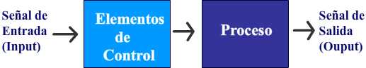
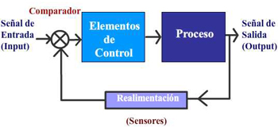

|
Una Máquina es capaz de realizar
un trabajo dirigido por un usuario.
Un Automatismo es capaz de
realizar un trabajo sencillo y repetitivo sin la intervención manual
del usuario. Repite de forma automática la acción para la que se ha
diseñado.
Un Robot es un sistema automático
programable, capaz de realizar múltiples tareas y decidir cuál es el
trabajo que debe hacer en función de la información que recibe de su
entorno.
Sistema de control
Conjunto de elementos o dispositivos
electrónicos que al recibir
información del exterior (entradas) generan una respuesta a la
salida. Se representa por un diagrama de bloques.
Sistemas de
lazo abierto o sistemas sin realimentación. La salida no tiene
efecto sobre el sistema.

Sistemas de
lazo cerrado o sistemas con realimentación o feedback.
La toma de decisiones del sistema no depende sólo de la entrada
sino también de la salida.

|
Los datos de entrada y de
realimentación de los sistemas de control se introducen mediante
unos
dispositivos,
normalmente electrónicos,
que se denominan sensores.
Los sensores se usan para
captar parámetros físicos como la temperatura, la posición de
los objetos, la fuerza, la presión, la humedad, la luz visible,
la luz infrarroja...
- Los
sensores de contacto se emplean para detectar el final del
recorrido o la posición límite de componentes mecánicos. Los
principales son los llamados fines de carrera (o finales
de carrera).
- Los
sensores ópticos detectan la presencia de una persona o de
un objeto que interrumpen el haz de luz que le llega al sensor.
Ejemplos son las fotorresistencias y las LDR.
- Los principales sensores de
temperatura son los termistores, NTC o PTC.
- Los sensores de humedad se
aplican para detectar el nivel de líquido en un depósito o en
sistemas de riego.
- Los sensores magnéticos
detectan los campos magnéticos que provocan los imanes o las
corrientes eléctricas, un ejemplo es el interruptor Reed.
- Los sensores infrarrojos
constan de un diodo emisor y un
fototransistor receptor. El diodo es capaz de emitir luz
infrarroja y el transistor es sensible a este tipo de ondas y
detecta las emisiones de los diodos.
Arquitectura de un
robot. En un robot se distinguirán los sensores, elementos de
control y actuadores.
Aplicaciones de un robot en la
industria:
-Soldadura, aplicación de pintura,
esmalte y adhesivos, operaciones de corte, movimiento de piezas,
montaje y ensamblaje.
|